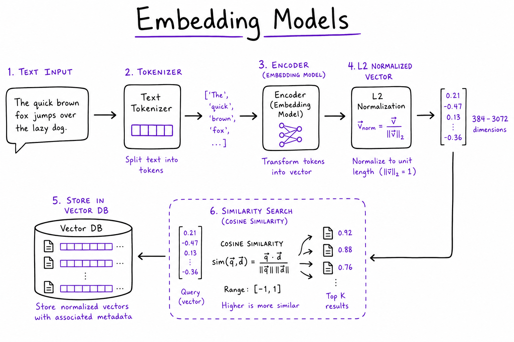
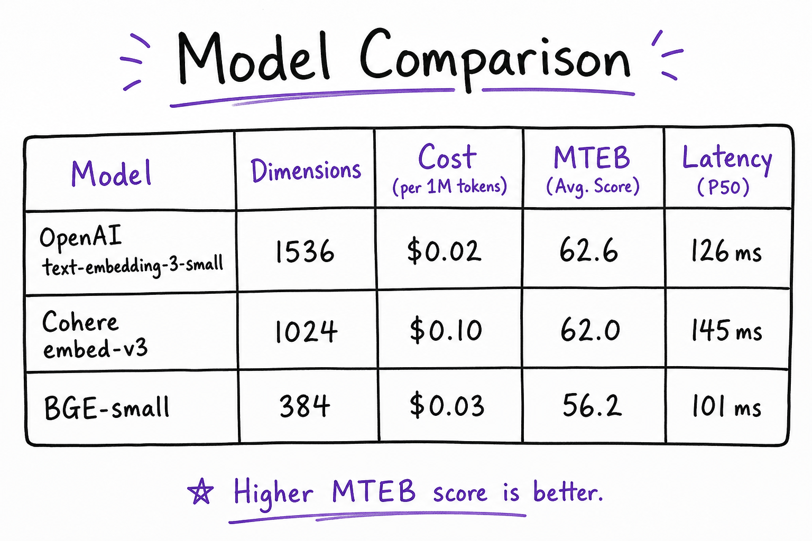
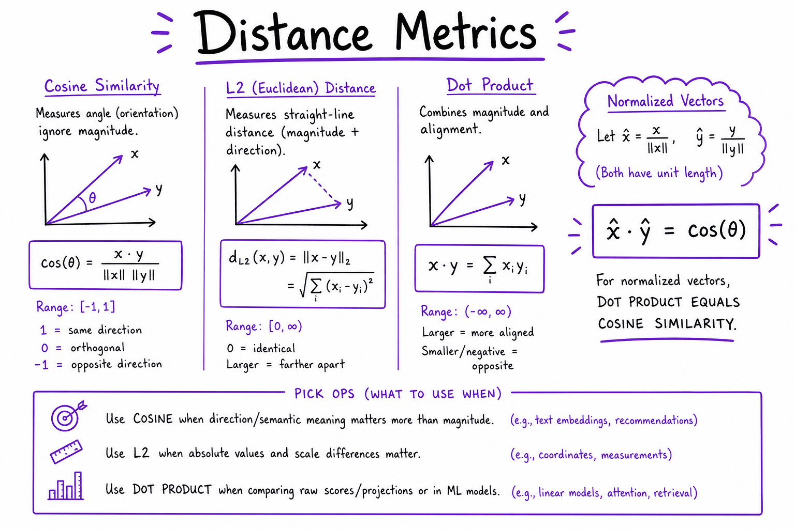

Choosing an embedding model // Knowledge & RAG
Model families, dimensions, benchmarks, cost, and when to fine-tune or switch.
01 — At a glance
Choose and deploy text embedding models for RAG: OpenAI text-embedding-3, Cohere embed-v3, open-source BGE/E5, Matryoshka dimension truncation, cosine vs dot-product metrics, and golden-set eval before you commit to an index in your vector database.

Embedding pipeline: text → tokenizer → bi-encoder transformer → L2-normalized vector (384–3072 dim) → cosine similarity in Vector search & databases. Same model at ingest and query; version tag in index namespace.
02 — New words
| Word | Meaning |
|---|---|
| Model card | The page published with a model that states its dimension, maximum input length, pooling, required prefixes, languages and licence. |
| MTEB | The Massive Text Embedding Benchmark: a public leaderboard that averages a model's scores over many tasks and datasets. |
| Golden set | Your own list of real queries, each labelled with the chunks that answer it. The only benchmark that measures your problem. |
| Recall@k | Of the chunks that answer a query, the fraction that appear in the top \(k\) results. |
| MRR | Mean reciprocal rank: average of \(1/\text{rank}\) of the first correct result (0 if none is found). |
| nDCG@k | A rank-aware score from 0 to 1 that gives more credit for correct results near the top of the list. |
| Matryoshka embedding | A vector trained so its first 256 or 512 numbers are themselves a usable, smaller embedding. |
| Scalar (int8) quantization | Storing each number as an 8-bit integer plus a scale: 4 times smaller than 32-bit floats. |
| Binary quantization | Keeping only the sign of each number, 1 bit per dimension: 32 times smaller, compared by counting matching bits. |
| Rescoring | Fetching a shortlist with a cheap, compressed comparison, then re-ranking only that shortlist with the full-precision vectors. |
| Asymmetric model | A model that must be told whether it is embedding a query or a document, through a prefix or an input-type parameter. |
| Re-embedding | Recomputing every stored vector with a new model. Required on any model change, because two models' vectors are incomparable. |
The lesson
03 — The question
The embedding model sets the ceiling on retrieval quality. If it does not place the right chunk in the candidate list, no reranker, prompt or larger language model downstream can recover it. It also fixes the size of every stored vector, the per-query latency, and a migration cost you pay in full every time you change your mind. So the choice deserves a measured decision, not a leaderboard glance.
The questions interviewers ask:
- How would you choose an embedding model for a new RAG system? What would you measure?
- Hosted API or self-hosted? What drives the cost?
- How do you cut vector storage by 4 to 30 times, and what does it cost in quality?
- When is fine-tuning an embedding model worth it, and how do you switch models without downtime?
The running example is the course's support assistant: 30,000 chunks of about 300 tokens each (9 million tokens in all) from 1,200 help-centre documents, 2 million customer queries a month averaging 15 tokens, and 15% of customers writing in Spanish. A product manager has asked: "Which embedding model, and what will it cost?" We will answer with numbers.
04 — Step 1: what actually differs between models
Every embedding model is a transformer encoder plus pooling, trained contrastively (the mechanism is in embeddings). What varies, and what to read off the model card before anything else:
| Property | Typical range | Why it matters |
|---|---|---|
| Parameters | 20 million to several billion | Query latency and serving cost grow with size. Large decoder-based embedders can be markedly better and are much slower. |
| Dimension | 384 to 4,096 | Memory and search time grow linearly with it. |
| Maximum input | 512 to 8,192+ tokens | Text beyond it is truncated, usually without an error. |
| Languages | English-only to 100+ | An English-only model maps Spanish queries poorly; a multilingual one can match a Spanish query to an English passage. |
| Query/document handling | Symmetric, prefixes, or an input-type parameter | Using the wrong prefix, or none, quietly lowers recall. |
| Training domain | Web, Q&A, code, scientific, legal | A model never trained on text like yours may not separate its fine distinctions. |
| Licence and hosting | Hosted only, open weights, restrictive or permissive | Decides whether you can run it inside your network at all. |
Two of these rows are hard constraints, not preferences. If documents may not leave your network, hosted APIs are out. If 15% of users write Spanish, English-only models are out. Apply constraints first; they usually shrink the field to a handful.
05 — Step 2: what a public leaderboard can and cannot tell you
MTEB scores a model on dozens of datasets across task types (retrieval, classification, clustering, semantic similarity, reranking and more) and reports an average. It is useful for one thing: a shortlist. A model far down the retrieval column is unlikely to surprise you.
It cannot pick the winner, for four reasons:
- The average mixes tasks you do not run. A model can rise on clustering and classification while being middling at retrieval. Read the retrieval column only.
- The datasets are not your domain. Public retrieval sets are Wikipedia questions, scientific claims, forum posts. Your help centre has plan names, error codes and policy clauses that differ by one number.
- Training overlap. Popular benchmark datasets, or text very like them, may have been in a model's training data, inflating its score on exactly those sets.
- Gaps at the top are small. Leading models are often separated by a point or two of average score, which is less than the measurement noise on your own data (Step 5).
So: use the leaderboard to choose three or four candidates that meet your constraints, spanning sizes (one small, one large, one hosted, one open), then measure them on your data.
06 — Step 3: build a golden set from real queries
A golden set is a list of queries, each labelled with the chunk IDs that answer it. It is the most valuable artefact in a retrieval project, because every later decision (chunk size, hybrid weights, reranker depth) is tuned against it too.
How to build one for the support assistant:
- Sample real queries from search logs or support tickets, not ones you invent. Engineers write queries that use the documents' own words, which makes every model look good.
- Stratify so the hard slices are present: queries with identifiers ("error E-4012"), Spanish queries, paraphrases ("money back"), questions whose answer depends on the plan, and some with no answer in the corpus.
- Label the answering chunks. A fast method: pool the top 20 results from every candidate model plus keyword search, and have someone who knows the product mark which are relevant. Pooling across models avoids favouring the one used to find the labels.
- Size it at 100 to 300 queries to start. A few hours of labelling; Step 5 shows why fewer is not enough.
Freeze the chunking while comparing models. If chunk boundaries move, labels attached to chunk IDs no longer line up; label at the document or passage level if you expect to re-chunk.
07 — Step 4: scoring a model with recall, MRR and nDCG
Run each golden query through each candidate, keep the top \(k\) chunk IDs, and score the list. Three metrics, each answering a different question. Take three queries with these top-5 results (bold marks a relevant chunk):
| Query | Relevant | Top 5 returned | Recall@5 | Reciprocal rank | nDCG@5 |
|---|---|---|---|---|---|
| q1 | c2 | c7, c2, c9, c4, c1 | 1.0 | 1/2 = 0.500 | 0.631 |
| q2 | c3, c6 | c5, c8, c3, c6, c0 | 1.0 | 1/3 = 0.333 | 0.571 |
| q3 | c11 | c1, c4, c2, c8, c9 | 0.0 | 0 | 0.000 |
| Mean | 0.667 | 0.278 | 0.401 | ||
- Recall@k asks "did the answer make it into the candidate list?". In a RAG system with a reranker after retrieval, this is the number that matters most, because the reranker can fix the order but cannot add what is missing. Measure it at the depth you will actually pass on (for example recall@50 if you rerank 50).
- MRR asks "how far down is the first right answer?". Useful when only one chunk is needed.
- nDCG@k discounts each relevant hit by \(1/\log_2(\text{rank} + 1)\) and divides by the best possible score. For q1, the hit at rank 2 earns \(1/\log_2 3 = 0.631\) against an ideal of 1. For q2, hits at ranks 3 and 4 earn \(0.5 + 0.431 = 0.931\) against an ideal of \(1 + 0.631 = 1.631\), giving 0.571.
Report recall at your candidate depth as the headline, nDCG@5 or @10 as the ordering quality, and always break both down by slice. A model that wins overall and loses badly on Spanish queries is the wrong model for this product.
08 — Step 5: how big a difference is real
With \(n\) queries, a measured recall of \(p\) has a standard error of about \(\sqrt{p(1-p)/n}\). At \(p = 0.8\):
| Golden-set size | Standard error | Approximate 95% interval |
|---|---|---|
| 50 queries | 0.057 | ±11 points |
| 200 queries | 0.028 | ±5.5 points |
| 1,000 queries | 0.013 | ±2.5 points |
That interval is for one model's score. When you compare two models by their averages, the uncertainty of the difference is about \(\sqrt{2} \approx 1.4\) times larger: roughly ±7.8 points at 200 queries. So with 50 queries, 0.80 against 0.74 tells you nothing; with 200, a 6-point gap between two averages is still inside the noise, and a 2-point gap certainly is. This is why leaderboard gaps of one or two points should not decide anything.
Two habits sharpen the comparison without more labelling. Compare models paired, query by query: both models answered the same queries, so most of the noise (easy queries, hard queries) is shared and cancels. Count only the queries where they disagree: A found the answer and B did not, or the reverse. If the models were equally good, each disagreement would be a coin flip. If A wins 22 and B wins 8 of 30 disagreements, the chance of a split that lopsided from fair coins is about 0.016 (a two-sided sign test), so the gap is real even though the two averages differ by only 7 points per 100 queries. And look at the disagreements by hand: they tell you why one model is better, which predicts whether the advantage will hold on new queries.
09 — Step 6: cost and latency, hosted versus self-hosted
Hosted embedding APIs charge per input token; illustrative list prices for well-known APIs have been in the range of $0.02 to $0.13 per million tokens. For the support assistant:
| Item | Tokens | At $0.02/M | At $0.13/M |
|---|---|---|---|
| Embed the corpus once | 30,000 × 300 = 9 M | $0.18 | $1.17 |
| Queries per month | 2 M × 15 = 30 M | $0.60 | $3.90 |
The embedding bill is negligible. That is the usual situation, and it changes how to think about the choice: API price is rarely the deciding cost. What costs money is vector storage and search (which scale with dimension, Step 7), and what costs users is latency.
Self-hosting means paying for a GPU whether or not it is busy. At an illustrative $1 per hour, one always-on GPU costs about $730 a month. At $0.02 per million tokens, the API would have to process 36.5 billion tokens a month to cost the same. So self-hosting is justified by other reasons:
- Data residency: documents or queries may not leave your network.
- Very high volume: billions of tokens a month, typically from re-embedding large corpora often.
- Latency: a small model on a GPU in the same data centre embeds a 15-token query in a few milliseconds; a hosted API adds a network round trip, often tens of milliseconds and with a long tail (order of magnitude).
- Control: a pinned model that cannot be deprecated under you, and the option to fine-tune.
Self-hosting has its own operational cost: a batching inference server, autoscaling, monitoring. For 2 million queries a month with no residency constraint, a hosted API is the default; the decision flips on a hard constraint, not on price.
10 — Step 7: dimensions, storage and Matryoshka truncation
Raw vector memory is \(N \times d \times \text{bytes per number}\). At our 30,000 chunks every model is small (a 3,072-dimension model needs 0.37 GB in 32-bit floats). Suppose the product grows to serve many customers' help centres, 10 million chunks:
| Dimension | float32 | float16 | int8 | binary |
|---|---|---|---|---|
| 384 | 15.4 GB | 7.7 GB | 3.8 GB | 0.48 GB |
| 1,024 | 41.0 GB | 20.5 GB | 10.2 GB | 1.28 GB |
| 1,536 | 61.4 GB | 30.7 GB | 15.4 GB | 1.92 GB |
| 3,072 | 122.9 GB | 61.4 GB | 30.7 GB | 3.84 GB |
Approximate indexes such as HNSW want vectors in RAM, so this table is roughly your memory bill before index overhead (see vector search). Search time also grows linearly with \(d\).
Matryoshka models are trained so that the first \(m\) numbers of the vector are a good embedding on their own: during training the contrastive loss is applied to several prefixes (say the first 64, 128, 256, 512 and all dimensions) at once, which pushes the most important information to the front. You can then store, for example, 512 of 1,536 dimensions, a third of the memory, usually for a small loss in recall that you must measure on your golden set.
Renormalise after truncating. A unit vector cut to its first part is no longer unit length: a random 1,024-dimension unit vector truncated to 256 dimensions has length about 0.46. If the index assumes dot product equals cosine, scores are now wrong. APIs that accept a "dimensions" parameter renormalise for you; if you truncate yourself, divide by the new length. Truncating a model that was not trained Matryoshka-style throws away information at random.
11 — Step 8: compressing stored vectors with int8 and binary
Independently of dimension, each number can be stored in fewer bits, the same idea as weight quantization in model compression.
- float16: half the memory, no measurable recall change for retrieval. A free default.
- int8 scalar: map each dimension's range onto −127 to 127 with a per-dimension scale. 4 times smaller than float32.
- Binary: keep only the sign of each number, packed 8 per byte; compare vectors by counting bits that agree (a Hamming distance, which CPUs compute in a few instructions). 32 times smaller.
To see the quality cost, a synthetic test: 20,000 unit vectors in 384 dimensions arranged in 200 topic clusters, and 200 queries near random documents. Ground truth is the exact float32 top 10. Recall@10 against that truth:
| Stored as | Bytes per vector | Recall@10 |
|---|---|---|
| float32 (truth) | 1,536 | 1.000 |
| int8 | 384 | 0.989 |
| binary | 48 | 0.390 |
| binary shortlist of 100, rescored in float32 | 48 in RAM, full vectors on disk | 1.000 |
Binary alone is a poor ranker: it cannot tell apart neighbours that are all close. But as a first pass it is excellent: the true top 10 are almost always inside its top 100, and rescoring 100 candidates with full vectors is cheap: microseconds of arithmetic, plus well under a millisecond to fetch them if they live on a local SSD rather than in RAM. This "compress for the shortlist, rescore with full precision" pattern is how large indexes get 10 to 30 times cheaper. Real embeddings behave differently from this synthetic set, and some models are trained to quantize well, so measure on your golden set; the shape of the result usually holds.
12 — Step 9: when fine-tuning pays
Fine-tuning continues the model's contrastive training on your own (query, relevant chunk) pairs, usually with in-batch negatives plus hard negatives mined from your current retriever. It helps most when your domain has vocabulary the base model treats as noise: internal product names, part numbers, legal clause structure, medical abbreviations.
Reach for it last, after cheaper fixes have been measured:
- Fix the obvious: correct prefixes, chunk sizes within the input limit, normalisation and index metric matching.
- Add keyword search and fuse (hybrid search): it covers identifiers, the most common domain gap.
- Add a reranker: it fixes ordering.
- Then, if recall at your candidate depth is still short on specific slices, fine-tune.
Data: a few thousand good pairs is a reasonable start; they can come from click logs, from support tickets matched to the article that resolved them, or from an LLM writing questions for each chunk (check a sample, since generated questions tend to copy the chunk's wording). Hold out part of the golden set the training data never touched. The hidden cost: a fine-tuned model is a new model, so the whole corpus must be re-embedded, and you now own a model to host and retrain.
13 — Step 10: switching models without breaking search
Vectors from two models live in unrelated coordinate systems. A clean way to see it: rotate a set of vectors by a random orthogonal matrix. Within each set, every cosine is preserved exactly (two texts at −0.068 in set A are at −0.068 in set B), yet the same text's vector in A and in B has a cosine of −0.058: noise. Two genuinely different models are at least that unrelated. So a query embedded with the new model, searched against vectors from the old one, returns garbage, with no error.
A safe migration:
- Store the model name and version on every vector, and keep each model's vectors in its own index or namespace.
- Re-embed the corpus into a new index while the old one serves (9 M tokens here: minutes and cents; for billions of tokens, plan the throughput and cost).
- Dual-write new and changed documents to both indexes during the backfill.
- Evaluate on the golden set, then shadow real traffic: run both, compare result overlap and downstream answer quality.
- Switch the query path and the index together, in one config change, and keep the old index until you are sure.
Anything else derived from the old model must move too: a semantic cache keyed by query vectors, similarity thresholds tuned on its scores, clustering built on its space.
14 — A worked decision for the support assistant
- Constraints. No data-residency requirement; 15% Spanish, so multilingual is required. That removes English-only models.
- Shortlist from the leaderboard's retrieval column: a hosted multilingual model (1,024 dimensions), a hosted large model (3,072), and an open multilingual model (768) as the self-host option.
- Golden set: 200 real queries from tickets, including 40 Spanish, 30 with identifiers and 20 with no answer.
- Measure recall@50 (we will rerank 50) and nDCG@10, overall and per slice. Suppose the hosted large model leads overall by 2 points: within noise at 200 queries. On the 40 Spanish queries, suppose the multilingual 1,024-dimension model finds the answer for 8 that the large model misses, and the reverse happens once. A slice of 40 is too small to trust its averages (±12 points each), but the paired count is decisive: 8 against 1 has a sign-test probability of about 0.04 under "equally good". That is a real difference on a slice that matters.
- Cost: under $5 a month in API fees for any candidate. Memory at 30,000 chunks: under 0.4 GB for any of them. Neither decides.
- Decision: the hosted multilingual model, float16 storage, version tag on every vector, golden set kept as a regression test for every future change. Revisit int8 or binary storage only if the corpus reaches millions of chunks.
15 — In code: an evaluation harness
The harness is model-agnostic: it takes ranked chunk IDs per query and the labelled relevant IDs. These numbers reproduce Step 4:
import math def recall_at_k(ranked, relevant, k): return len(set(ranked[:k]) & relevant) / len(relevant) def reciprocal_rank(ranked, relevant): return next((1 / i for i, c in enumerate(ranked, 1) if c in relevant), 0.0) def ndcg_at_k(ranked, relevant, k): dcg = sum(1 / math.log2(i + 1) for i, c in enumerate(ranked[:k], 1) if c in relevant) ideal = sum(1 / math.log2(i + 1) for i in range(1, min(len(relevant), k) + 1)) return dcg / ideal def evaluate(results, golden, k=5): """results: {query_id: [chunk ids, best first]}; golden: {query_id: set of relevant ids}""" rows = [(recall_at_k(results[q], rel, k), reciprocal_rank(results[q], rel), ndcg_at_k(results[q], rel, k)) for q, rel in golden.items()] n = len(rows) return {name: round(sum(r[i] for r in rows) / n, 3) for i, name in enumerate(["recall", "mrr", "ndcg"])} golden = {"q1": {"c2"}, "q2": {"c3", "c6"}, "q3": {"c11"}} model_a = {"q1": ["c7", "c2", "c9", "c4", "c1"], "q2": ["c5", "c8", "c3", "c6", "c0"], "q3": ["c1", "c4", "c2", "c8", "c9"]} print(evaluate(model_a, golden)) # {'recall': 0.667, 'mrr': 0.278, 'ndcg': 0.401} # paired comparison: where do two models disagree on finding the answer? model_b = {"q1": ["c2", "c7", "c9", "c4", "c1"], "q2": ["c5", "c8", "c0", "c1", "c4"], "q3": ["c11", "c4", "c2", "c8", "c9"]} hit = lambda res, q: recall_at_k(res[q], golden[q], 5) > 0 print("A only:", [q for q in golden if hit(model_a, q) and not hit(model_b, q)], "B only:", [q for q in golden if hit(model_b, q) and not hit(model_a, q)])
The synthetic compression test from Step 8, and the two facts from Steps 7 and 10, in numpy:
import numpy as np rng = np.random.default_rng(0) N, d, k = 20_000, 384, 10 centers = rng.normal(size=(200, d)) # 200 topics X = centers[rng.integers(0, 200, N)] + rng.normal(size=(N, d)) X /= np.linalg.norm(X, axis=1, keepdims=True) noise = rng.normal(size=(200, d)); noise /= np.linalg.norm(noise, axis=1, keepdims=True) Q = X[rng.integers(0, N, 200)] + 0.5 * noise # queries near some document Q /= np.linalg.norm(Q, axis=1, keepdims=True) truth = np.argsort(-(Q @ X.T), axis=1)[:, :k] # exact float32 top 10 recall = lambda found: np.mean([len(set(f) & set(t)) / k for f, t in zip(found, truth)]) scale = np.abs(X).max(0) / 127 # int8, one scale per dimension X8 = np.round(X / scale).astype(np.int8) print("int8 %.3f" % recall(np.argsort(-(Q @ (X8 * scale).T), axis=1)[:, :k])) # 0.989 Xb, Qb = (X > 0).astype(np.int16), (Q > 0).astype(np.int16) # sign bits agree = Qb @ Xb.T + (1 - Qb) @ (1 - Xb).T # matching bits = d - Hamming print("binary %.3f" % recall(np.argsort(-agree, axis=1)[:, :k])) # 0.390 cand = np.argsort(-agree, axis=1)[:, :100] # shortlist 100, rescore exactly print("binary+rescore %.3f" % recall([c[np.argsort(-(X[c] @ q))[:k]] for c, q in zip(cand, Q)])) # 1.000 v = np.random.default_rng(1).normal(size=1024); v /= np.linalg.norm(v) print("length after truncating to 256 dims: %.2f" % np.linalg.norm(v[:256])) # 0.46 R, _ = np.linalg.qr(np.random.default_rng(1).normal(size=(d, d))) # a "different model" A = X[:2]; B = A @ R print("within A %.3f, within B %.3f, same text A vs B %.3f" % (A[0] @ A[1], B[0] @ B[1], A[0] @ B[0]))
To produce results from a hosted API, the call looks like this (OpenAI Python SDK, documented API; needs a network and key, so it is not run here):
# needs: network access and OPENAI_API_KEY (documented OpenAI SDK API, not run here) import numpy as np from openai import OpenAI client = OpenAI() def embed(texts, dims=None): kw = {"dimensions": dims} if dims else {} resp = client.embeddings.create(model="text-embedding-3-small", input=texts, **kw) return np.array([d.embedding for d in resp.data]) # returned unit-length chunk_vecs = embed(chunk_texts) # batch in groups of a few hundred query_vecs = embed(list(queries.values())) top = np.argsort(-(query_vecs @ chunk_vecs.T), axis=1)[:, :50] results = {qid: [chunk_ids[j] for j in row] for qid, row in zip(queries, top)}
Quick reference
16 — What & Why
Embedding models convert text into dense vectors so semantic similarity becomes geometry: nearby vectors = related meaning. In The RAG pipeline pipelines, the embedding model sets the recall ceiling before chunking tuning, hybrid search, or Reranking can help. Wrong model, wrong metric, or mismatched ingest/query models waste all downstream work.
Functional requirements
- Embed document chunks at ingest with stable IDs and model version metadata
- Embed queries at search time with the same model (or asymmetric pair for Cohere)
- Support batch ingest (64–256 texts/GPU batch) and low-latency single-query embed
- Truncate dimensions (Matryoshka) when storage cost matters
- Version and migrate: re-embed entire corpus on model bump
Non-functional requirements
- Quality: recall@5 ≥ target on domain golden set (not MTEB alone)
- Latency: query embed < 30 ms p99 (API or warm GPU worker)
- Cost: $/1M tokens for hosted; GPU $/hour for self-host at scale
- Consistency: L2 normalization pipeline matches vector DB distance ops
- Compliance: air-gap option (BGE/E5 on TEI) when data cannot leave VPC
Prerequisite: Embeddings fundamentals. Vectors land in Vector search & databases — pick model first, index second.
17 — Core Concepts
| Term | Definition | Gotcha |
|---|---|---|
| Bi-encoder | Single forward pass embeds query and doc independently | Fast ANN retrieval; not a reranker |
| Cross-encoder | Joint model on [query, passage] pair | Accurate but O(pairs) — see Reranking |
| MTEB | Massive Text Embedding Benchmark leaderboard | Your legal/medical domain may differ wildly |
| Matryoshka | Embeddings trained so first k dims stay useful when truncated | OpenAI v3 dimensions=512 param |
| L2 normalization | Scale vector to unit length | Dot product = cosine when normalized |
| Asymmetric embed | Different input_type for query vs document (Cohere) | Must set correctly at ingest vs query |
| Context length | Max tokens per embed call (512–8192) | Chunk long docs first; never embed whole PDF |
| Model version | Tag in vector metadata (e.g. embed_v3_small) | Mixing versions in one index breaks search |
18 — API / Interface Surface
# OpenAI — default SaaS choice
from openai import OpenAI
client = OpenAI()
resp = client.embeddings.create(
model="text-embedding-3-small",
input=["Refund policy within 30 days", "How do I return an item?"],
dimensions=512, # Matryoshka truncate from 1536
)
vec = resp.data[0].embedding # list[float], 512 dims
# Cohere — asymmetric query/doc types
import cohere
co = cohere.Client()
doc_vecs = co.embed(
texts=chunks, model="embed-english-v3.0", input_type="search_document"
).embeddings
query_vec = co.embed(
texts=[question], model="embed-english-v3.0", input_type="search_query"
).embeddings[0]
# Local — sentence-transformers (BGE)
from sentence_transformers import SentenceTransformer
model = SentenceTransformer("BAAI/bge-small-en-v1.5")
vecs = model.encode(texts, normalize_embeddings=True, batch_size=64)
| API | Key params | Output |
|---|---|---|
OpenAI embeddings.create | model, input, dimensions | data[].embedding float[] |
Cohere embed | input_type, model | embeddings float[][] |
| sentence-transformers | normalize_embeddings=True | numpy / torch tensor |
| TEI (HuggingFace) | HTTP /embed batch | Production GPU batching for BGE/E5 |
19 — When to Use / When NOT
| Model / approach | Use when | Skip when |
|---|---|---|
text-embedding-3-small | Default SaaS RAG; best $/quality hosted | Air-gapped VPC, no external API |
text-embedding-3-large | Hard retrieval sets; small recall gap vs small | Cost/storage sensitive; small < 3% lift on eval |
Cohere embed-v3 | Multilingual 100+ langs; asymmetric embed | English-only + already on OpenAI stack |
| BGE / E5 self-host | Billions of tokens; data residency; fine-tune path | No GPU ops team; low volume (<1M embeds/mo) |
| Matryoshka 512-dim | Index RAM cost high; recall loss < 2% on eval | Recall-critical legal/medical without validation |
20 — Architecture
+------------------+
| Ingest worker |
| (chunk + embed) |
+--------+---------+
| batch 64-256
v
+------------------+
| Embed service |
| OpenAI / TEI |
+--------+---------+
| vectors + embed_model tag
v
+------------------+
| Vector DB |
| (ANN index) |
+--------+---------+
^
Query embed (cached) ---+
+------------------+
| Query path |
| hash(q)->vec TTL|
+------------------+21 — Model Comparison

Comparison: OpenAI 3-small, 3-large, Cohere embed-v3, BGE-small — dimensions, $/1M tokens, MTEB retrieval score, typical latency.
| Model | Dim | Cost / notes | When to pick |
|---|---|---|---|
| text-embedding-3-small | 1536 (512 trunc OK) | ~$0.02 / 1M tokens | Default prod RAG |
| text-embedding-3-large | 3072 | ~2× small cost + storage | Hard queries after small fails eval |
| embed-english-v3.0 | 1024 | Cohere pricing; asymmetric | Multilingual or Cohere rerank stack |
| bge-small-en-v1.5 | 384 | Self-host GPU/CPU | Air-gap, edge, cost at scale |
| bge-large-en-v1.5 | 1024 | Heavier GPU | Best OSS English recall |
| multilingual-e5-large | 1024 | Self-host | 50+ languages without Cohere |
Rule: Never pick from MTEB alone. Run 50–100 golden queries from your corpus through recall@5 before re-indexing millions of chunks.
22 — Distance Metric

Cosine vs L2 vs dot product: L2-normalized vectors make inner product equal to cosine; match pgvector vector_cosine_ops or Pinecone metric to your pipeline.
| Metric | When | Index setting |
|---|---|---|
| Cosine distance | OpenAI models; normalized OSS | pgvector <=>; Pinecone cosine |
| Inner product (dot) | Normalized vectors (same as cosine) | pgvector <#> with normalized vecs |
| L2 (Euclidean) | Some legacy models unnormalized | pgvector <->; rarely default for text |
# Always normalize OSS embeddings before upsert import numpy as np v = model.encode(text, normalize_embeddings=True) # OR manually: v = v / np.linalg.norm(v)
Mismatch (cosine index + unnormalized vectors) silently degrades recall. Log embed pipeline hash in Observability traces for debugging.
23 — Matryoshka Representation Learning
OpenAI text-embedding-3-* supports dimensions parameter: truncate 1536 → 512 with ~1–3% recall loss on many general tasks. Validate on your golden set before committing.
client.embeddings.create(
model="text-embedding-3-small",
input=texts,
dimensions=512, # stores 512-dim; still trained as Matryoshka
)
- Storage savings: 512/1536 ≈ 67% less RAM in HNSW index
- Same API: no model swap; only dimension param changes
- Re-index required: changing dimensions = new vectors for all chunks
- OSS Matryoshka: nomic-embed, some E5 variants; check model card
24 — Open Source & Self-Host
Deploy BGE, E5, GTE via Text Embeddings Inference (TEI) on GPU — not vLLM (LLM-only). See Serving & scaling for LLM stack; TEI is the embed analogue.
# TEI Docker — batch embed server
docker run --gpus all -p 8080:80 \
ghcr.io/huggingface/text-embeddings-inference:latest \
--model-id BAAI/bge-small-en-v1.5
# HTTP embed
curl http://localhost:8080/embed -d '{"inputs": ["hello world"]}'
- Fine-tune: LoRA on query-doc pairs only with 10K+ labeled pairs; re-eval vs bigger off-shelf first
- Quantization: int8 embed models exist; verify recall on golden set
- Observability: log batch size, GPU util, p99 embed latency per tenant
25 — Eval Before You Index
Compare 2–3 embedding models on the same chunk set and golden queries before full re-index. Tie to Evaluating LLM features CI and Observability.
# Pseudo-eval loop
for model in ["text-embedding-3-small", "bge-small-en-v1.5"]:
index_golden_corpus(model)
scores = [recall_at_k(q, gold_doc_ids, k=5) for q in golden_queries]
print(model, np.mean(scores))
| Metric | Measures | Target |
|---|---|---|
| recall@5 | Gold doc in top 5 ANN results | ≥ 0.85 domain-dependent |
| nDCG@10 | Ranked list quality | Compare before/after model swap |
| Latency p99 | Query embed + ANN | < 50 ms total retrieve stage |
26 — Full Pipeline Example
End-to-end embed + upsert + query against a vector store. Swap Pinecone for Vector search & databases with the same vectors.
from openai import OpenAI
import hashlib
client = OpenAI()
EMBED_MODEL = "text-embedding-3-small"
DIMENSIONS = 512
NAMESPACE = "support_kb_v2"
def embed_texts(texts, input_type=None):
# input_type ignored for OpenAI; use for Cohere
resp = client.embeddings.create(
model=EMBED_MODEL,
input=texts,
dimensions=DIMENSIONS,
)
return [d.embedding for d in resp.data]
def ingest_chunks(chunks):
"""chunks: list of {id, text, metadata}"""
vectors = embed_texts([c["text"] for c in chunks])
upserts = []
for c, vec in zip(chunks, vectors):
upserts.append({
"id": c["id"],
"values": vec,
"metadata": {
**c.get("metadata", {}),
"embed_model": EMBED_MODEL,
"embed_dim": DIMENSIONS,
},
})
vector_db.upsert(namespace=NAMESPACE, vectors=upserts)
def search(query, top_k=20):
cache_key = hashlib.sha256(
(query.strip().lower() + EMBED_MODEL).encode()
).hexdigest()
q_vec = redis.get(cache_key)
if q_vec is None:
q_vec = embed_texts([query])[0]
redis.setex(cache_key, 3600, q_vec)
hits = vector_db.query(
namespace=NAMESPACE,
vector=q_vec,
top_k=top_k,
include_metadata=True,
)
return hits
# Golden eval before prod
golden = [("How do I refund?", "doc-refund-policy")]
for q, gold_id in golden:
hits = search(q, top_k=5)
ids = [h.id for h in hits]
print(q, gold_id in ids, ids[:3])
Log every search in Observability with embed_model, namespace, and hit IDs. Run reranker on hits before LLM per Reranking sheet.
In production
27 — Production & Ops
| Concern | Practice |
|---|---|
| Versioning | Metadata embed_model=text-embedding-3-small-v1 on every vector |
| Rate limits | Queue ingest; exponential backoff on OpenAI 429 |
| Batching | 64–256 texts per GPU batch (TEI); 2048 inputs/OpenAI call max |
| Cache | Query embed cache 5–60 min TTL; key = hash(normalized question + model) |
| Migration | Blue/green namespace; re-embed async; flip router when recall validated |
| Cost | Track tokens per tenant in Observability dashboard |
29 — Where people get lost
- Cohere input_type mismatch —
search_documentat ingest,search_queryat query; swapping kills recall - Skip normalization on OSS — upsert raw BGE vectors into cosine index
- Embed whole documents — exceed 512–8K token limit; chunk first per The RAG pipeline guide
- Re-rank before fixing embed — reranker cannot recover missing gold doc from ANN
- Mix model versions in one index — query with v3, docs embedded with ada-002
- Trust MTEB only — legal/medical/domain jargon needs custom golden set
- No embed_model in metadata — impossible to debug which index generation failed
- "Pick the top of the leaderboard." The average mixes tasks you do not run, on domains that are not yours, with gaps smaller than your measurement noise. Shortlist from it; decide on your golden set.
- A golden set written by the engineers. Invented queries reuse the documents' wording and flatter every model. Sample real queries.
- Judging by the overall average only. Break results down by slice (language, identifiers, no-answer); the slice that matters to the product may reverse the ranking.
- Optimising API price. Embedding fees are usually tiny; storage, search latency and migration effort dominate.
- Truncating dimensions without renormalising, or truncating a non-Matryoshka model. The first breaks cosine scores; the second discards information arbitrarily.
- Using binary quantization as the final ranking. It is a shortlist method; rescore with full-precision vectors.
- Fine-tuning first. Prefixes, hybrid search and a reranker are cheaper, and fine-tuning commits you to re-embedding and hosting a model.
- Swapping the model in place. Old and new vectors are incomparable; migrate with a separate index, dual writes and a single cutover.
30 — How this connects
Builds on
- Calling a model — The API call end to end: messages, roles, streaming, tool calls, errors and retries, across providers.
- Embeddings — Turning meaning into numbers: dense vectors, cosine similarity, sentence embeddings and contrastive training.
Where this shows up later
- Vector search & databases — Exact and approximate nearest neighbours, HNSW and IVF, and choosing a vector database.
- Document ingestion — Parsing PDFs and HTML, OCR, deduplication and keeping the index fresh.
- Chunking — Fixed, recursive, semantic, document-aware and parent-child chunking, and how to tune it.
- Hybrid search & query understanding — BM25 plus vectors fused with RRF, query rewriting, decomposition and HyDE.
- Reranking — Cross-encoder rerankers: retrieve wide, rescore, keep the best few.
- Making RAG good & measuring it — Advanced RAG, a production RAG chatbot design, retrieval and answer metrics, freshness, ACLs, latency, injection.
- Serving & scaling — vLLM and Ollama, benchmarking honestly, a production serving setup and scaling it.
- LlamaIndex — Data-first RAG framework: loaders, indexes, query engines.
31 — Check yourself
A query has relevant chunks at ranks 1 and 5 of the top 5, and there are exactly two relevant chunks. What are its recall@5, reciprocal rank and nDCG@5?
Model A scores recall@50 = 0.83 and model B 0.81 on 100 golden queries. Should you switch from B to A?
You must store 50 million chunks with a 1,024-dimension model. How much RAM do float32, int8 and binary vectors need?
Why does recall at the candidate depth matter more than nDCG@5 for the first-stage retriever in a system with a reranker?
Your company forbids sending customer data to external APIs, and query volume is low. What follows?
A teammate truncates 1,536-dimension vectors to 512 by slicing the arrays and sees search quality collapse. Name two possible causes.
What else must change when you migrate to a new embedding model, besides the document index?
How do you pick an embedding model for production RAG?
OpenAI text-embedding-3-small vs large?
What is Matryoshka and when use it?
dimensions=512 truncates from 1536 with small recall trade for ~67% index RAM savings. Always validate on domain eval before prod.Cosine vs dot product vs L2?
vector_cosine_ops for OpenAI-style. L2 only if model docs specify unnormalized Euclidean.Explain Cohere asymmetric embedding.
input_type=search_document at ingest optimizes passages for retrieval; search_query at query time optimizes questions. Same model, different heads — mixing types is a common production bug.When self-host vs OpenAI embeddings?
Should you fine-tune embedding models?
How handle multilingual embeddings?
How cache query embeddings?
What to log in observability for embed path?
embed_model for regression compares across deploys.